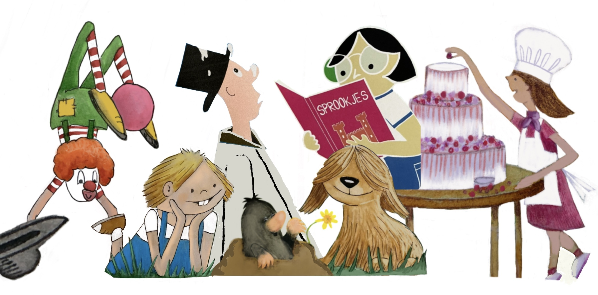
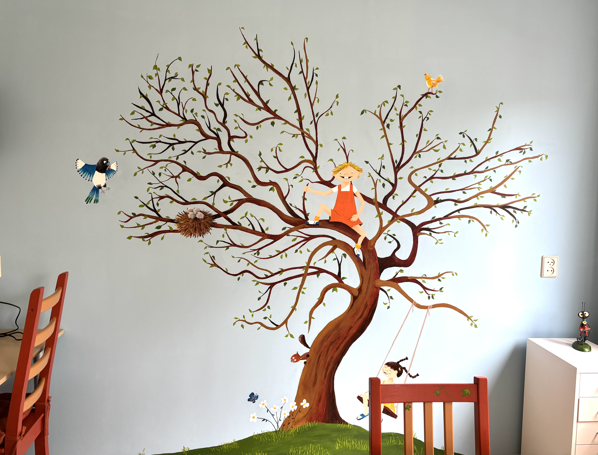
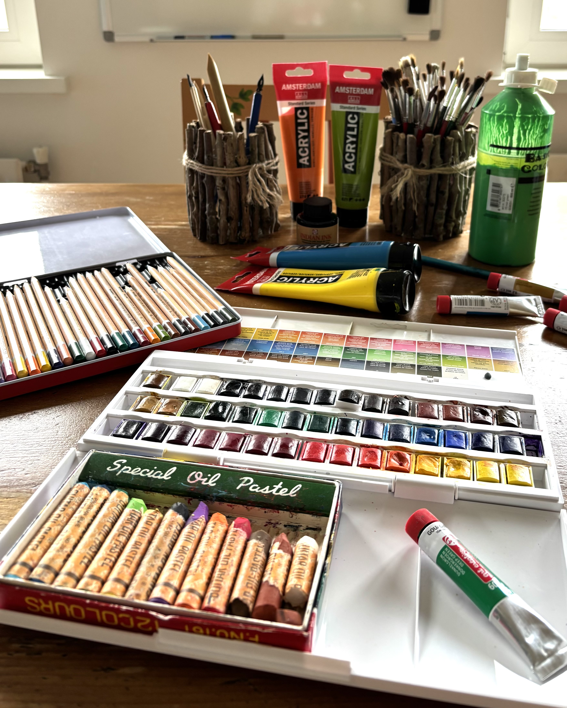
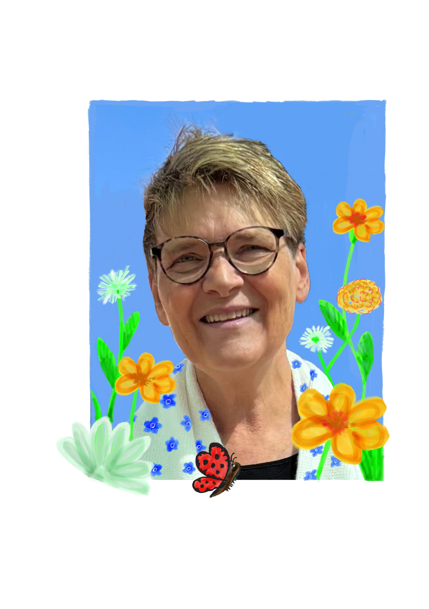

Wat gaan we doen
Stap voor stap ga je leren allerlei verschillende personages te ontwerpen van mensen en dieren.
Hoe ziet een gezicht of snuitje eruit? Hoe laat je bijvoorbeeld je figuurtje blij, boos of omhoog kijken?
Hoe geef je je figuur een eigen karakter en hoe kun je hem laten bewegen op papier?
Ontdek hoe oneindig veel mogelijkheden er zijn als je aan het tekenen gaat!
We werken met verschillende materialen, zoals aquarelverf, inkt, softpastels, acrylverf, noem maar op. Je kunt heerlijk creatief zijn en er valt ook veel te leren.
De maximale groepsgrootte is 8 kinderen.
Dus er is veel aandacht voor iedereen.
Waar
De lessen worden gegeven in mijn atelier aan huis in Haarlem, Schakwijk, in de buurt van de Boerhaavelaan.
Wanneer
De lessen worden gegeven op maandag en woensdag:
| Dag | Leeftijd | Groep | Tijd |
|---|---|---|---|
| Maandag | 6 t/m 9 jaar | Groep 3 t/m 5 | 15.00 - 16.15 |
| Maandag | 9 t/m 12 jaar | Groep 6 t/m 8 | 16.30 - 17.45 |
| Woensdag | 6 t/m 9 jaar | Groep 3 t/m 5 | 15.00 - 16.15 |
| Woensdag | 9 t/m 12 jaar | Groep 6 t/m 8 | 16.30 - 17.45 |
* Tijdens de schoolvakanties zijn er geen lessen.
* Lessen inhalen is niet mogelijk.


Tarief
De kosten bedragen 10 euro per les. Materiaal is daarbij inbegrepen.
Je kunt je opgeven voor een periode:
| Periode | Wanneer | Kosten* | Aantal lessen |
|---|---|---|---|
| Periode 1 | Van zomervakantie tot kerstvakantie | 160 euro | 16 lessen |
| Periode 2 | Van kerstvakantie tot Pasen | 100 euro | 10 lessen |
| Periode 3 | Van Pasen tot de zomervakantie | 120 euro | 12 lessen |
Het bedrag dient voor de eerste les te zijn overgemaakt.
Instructies hiervoor ontvang je bij aanmelding.
Als je al lessen volgt, kun je gegarandeerd verder in de volgende periode.
Als je wil stoppen kun je dat tot drie weken van tevoren aangeven.
*Wil je graag meedoen met de tekenlessen, maar is dat financieel een probleem?
Kijk dan op:
Jeugdfonds Sport & Cultuur Haarlem
of
Samen voor alle kinderen
.
Zij kunnen je misschien helpen.
Aanmelden
Meld je aan via onderstaande knop of door een mail te sturen naar:
irene.vanveen1@gmail.com
Als je van tevoren graag de locatie wil zien en even wil kennismaken dan is dat mogelijk.
Heb je nog vragen, bel me dan gerust even:
Irene 06 45482836
